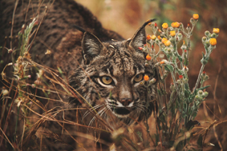
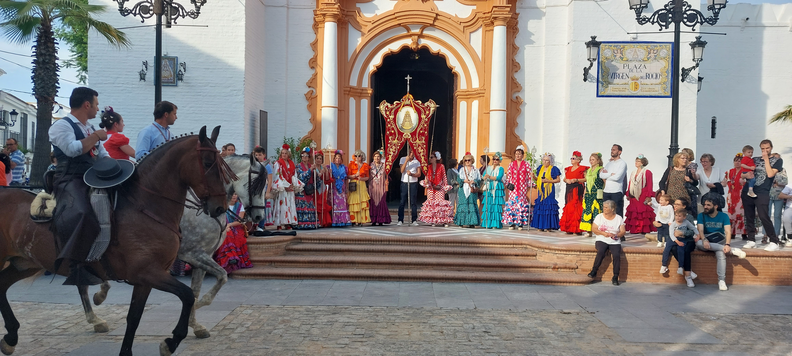
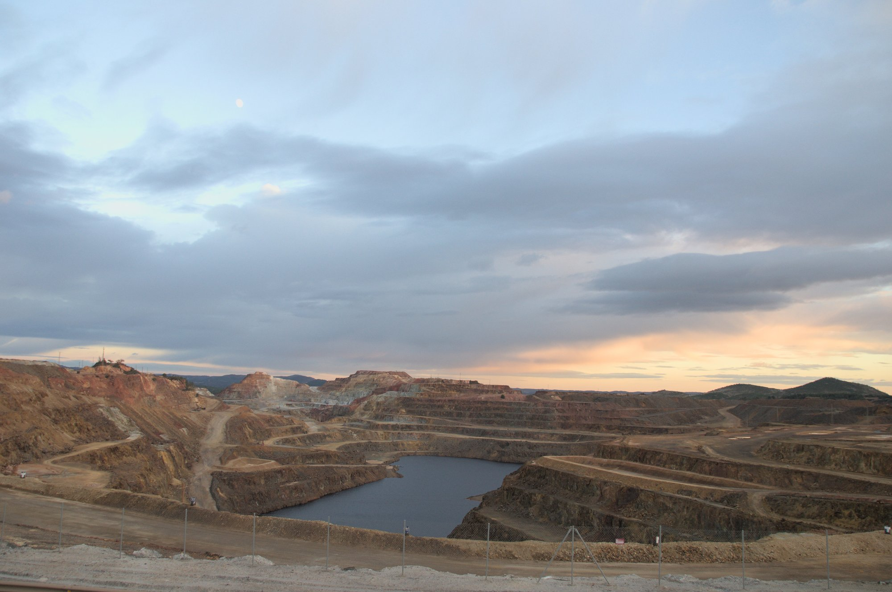
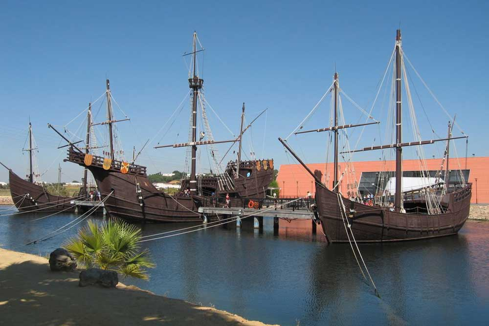
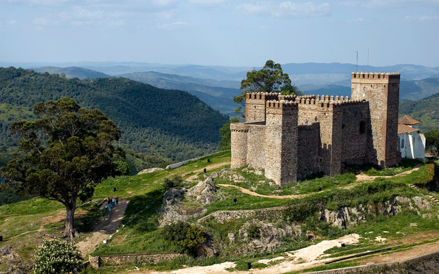
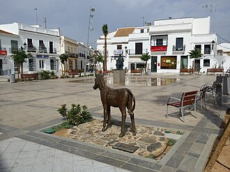

Sumérgete en nuestra tierra
Huelva no es solo un destino, es un lugar para sentir con el alma y el corazón. Queremos que descubras el encanto de Doñana, el fervor Rociero, la calma de las playas infinitas y las profundidades de la tierra en la Gruta de las Maravillas. Juntos te mostraremos cada lugar como solo nosotros lo conocemos, sintiendo su esencia y conectando con su historia. “Cada rincón te hablará de nuestra tierra, de su gente y de su historia.”








Momentos que dejan huella
No vengas solo a ver, trae el corazón abierto para sentir cada emoción y deja que Huelva cale en ti. Queremos que cada experiencia te sorprenda, que aprendas algo nuevo y lo integres como propio. Nuestro objetivo es que se te escape una sonrisa cuando recuerdes la experiencia vivida, porque no fuiste un turista, fuiste parte de la historia. “Porque hay lugares que se visitan, y otros …que se gravan en el corazón.”
Tierra de pescadores
Relájate y ejercita la paciencia, tan ausente en esta época. Aprende a pescar en un paraje natural único mientras cierras los ojos e inspiras profundamente la brisa del océano que golpea tu cara; escucha el romper de las olas justo frente a ti.
Paseo a caballo
Móntate sobre un caballo y siente lo que es controlar un animal de 500Kg. Imagina ir acompañado de miles de caballos tal y como se hace el camino de El Rocío. Ahora, mira hacía abajo para imaginarte como nos vieron los indígenas americanos cuando llegaba un español a caballo.
Senderismo
Perdámonos caminando por una senda entre pinares, elige una buena vara como apoyo y analicemos la flora y la fauna local. Oye el cante de los pájaros y vamos a intentar distinguirlos e identificarlos.
“Cacería” fotográfica
Los locales conocen Doñana con el nombre de “El Coto” por su origen como coto de caza, afición y tradición que perdura en la zona. Cojamos una cámara con zoom y vayamos a “cazar” las mejores fotografías de animales. Mantente oculto, localiza la presa, apunta y dispara.Bocados de Huelva
En Huelva, la comida es encuentro, es amistad, es emoción. Comer en Huelva es como hacer el amor. Cada cucharada, una caricia; cada plato, una historia de amor que estremecerá tus sentidos. Con nosotros, no solo probarás la comida: la vivirás. Te llevaremos a los rincones donde nosotros mismos disfrutamos de la mejor gastronomía, rodeados de amigos y de historias; el verdadero espíritu de nuestra tierra. “Para nosotros, comer es celebrar, y contigo … queremos celebrarlo todo.”
Ibéricos y chacinas
Presa paleta, secreto, lagartito, abanico, jamón, caña de lomo, presita embuchada, morcón y muchas otras delicias ibéricas que nunca antes habrás probado.Nuestras travesías
Viajar es mucho más que ir a un destino. Es conectar con un lugar y con su gente, con su historia y sus sabores. Nuestras travesías han sido diseñados para que solo tengas que preocuparte de una cosa: DISFRUTAR. Nosotros nos encargamos de TODO para que sea inolvidable: transporte, alojamiento, comidas, actividades, experiencias, y lo más importante, acompañarte como guías locales que conocen cada rincón y cada secreto de esta tierra. Hemos reunido lo mejor de nuestra tierra mezclando naturaleza, cultura, gastronomía y tradición, para que tú seas parte de Huelva y Huelva sea parte de ti. “Todo empieza con una decisión... elige vivirla y déjate llevar.”
🌊 Disfruta Huelva - 4 - 5 días

Escapada de puente o finde largo en la que conocer la esencia de Huelva y hacer algunas actividades/experiencias adicionales.